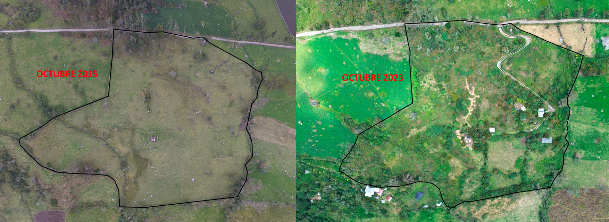

My research program includes different strategies to promote solutions and actions to pressing planetary health issues, such as community engagement and science communication to a diversity of interest groups. In this section, I highlight projects with a remarkable social and community engagement component.

La Comarca
La Comarca is a Civil Society Natural Reserve located 20 km away from the capital of Colombia at an altitute of 2,850 masl (9,350 ft). We founded this project in 2015 with the objective to collaborate in regenerating natural ecosystems and strenghten the social fabric that support rural life and the ecological foundation of the Bogotá Region. We are part of the Tasqua Network, a group of 27 Civil Society Reserves committed to protect biodiversity and promote nature-based solutions to foster the sustainability of crucial socioecological systems in the region
Our vision is to establish La Comarca as a integrative experience for local and visitors to promote ecological regeneration, sustainability lifestyles, while integrating natural and productive systems. This land will be a place of knowledge, experimentation and research, as well as an opportunity to reconnect with nature and collective practices
Our main program is El Apiario La Comarca, which was founded to accelerate the natural regeneration of the territory, and to promote sustainable productive alternatives to rural youth and women in the region. Below, you can see drone imagery showing our 8-year progress in regenerating the ecological connection between native forests, protecting crucial regional water source.
More Public Scholar Activities
- Member of the Pacific-northwest Health Equity Network (PHEN - formerly BCCI) leadership team. PHEN is a community of practice that promotes "global and planetary health research as a driver of collaboration, partnership, and equity in the creation, co-production, and translation of knowledge for evidence-informed decision-making and improved health and well-being globally."
- Member of the Collegium Ramazzini. We are an independent, international scientific academy with the mission to "increase scientific knowledge of the environmental and occupational causes of disease and to transmit this knowledge to decision-makers, the media and the global public to protect public health, prevent disease and save lives."
- Member of Mesa Técnica Ciudadana por la Calidad del Aire de Bogotá. The MECAB is a participatory space where we work together with activists, community members, policy makers and scholars to improve Bogotá’s air quality